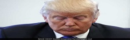

A Growing List Of Republicans Call For Trump To Step Down
The Republican Party plunged into an epic and historic political crisis Saturday with just a month to go until Election Day, as a growing wave of GOP lawmakers called on defiant presidential nominee Donald Trump to drop out of the race in the wake of a video showing him make crude sexual remarks. The fallout from the tape published by The Washington Post - in which Trump bragged in obscene language about forcing himself on women sexually - threatens to endanger the party's hold on both houses of Congress in addition to the White House, which many Republicans now fear is lost. The episode also comes ahead of Sunday's second presidential debate in St. Louis, which was already a crucial moment but could determine how widely the damage spreads.
After five days of getting no love from Washington on the Kashmir issue, the envoys, who started their Washington trip with bluster, ended it with a whimper. At the start of their 5-day trip, the Pakistani envoys warned that their country would join the "China-Russia-Iran" axis if the US didn't intervene in the Kashmir issue. They even sent a message to India that they would invoke the Maoists and small rebellions in northeast India , if India continued to talk about Balochistan, TOI reported yesterday.
By mid-afternoon Saturday, more than two dozen Republican lawmakers had called on Trump to leave the race, often touting vice presidential nominee Mike Pence as an alternative. Others including Sen. John McCain, R-Arizona, the 2008 GOP nominee, said they could no longer vote for Trump but stopped short of calling on him to drop out. Still,l the Republican Party's top leadership - including House Speaker Paul Ryan (Wisconsin), Senate Majority Leader Mitch McConnell (Kentucky) and party chairman Reince Priebus - continued to support Trump even as they denounced his comments.
Dawn further wrote today that diplomatic sources in Washington said the Pakistan PM Nawaz Sharif's envoys Trump, who offered a qualified apology for the remarks in an overnight video statement while also attacking former president Bill Clinton, told The Post he would not drop out under any circumstances. "I'd never withdraw. I've never withdrawn in my life," Trump said in a Saturday morning phone call from his home in Trump Tower in New York. "No, I'm not quitting this race. I have tremendous support." "They're not going to make me quit, and they can't make me quit," Trump added, speaking of those who have urged him to step aside. "The Republicans, you've got to remember, have been running for a long time. The reason they don't win is because they don't stick together."